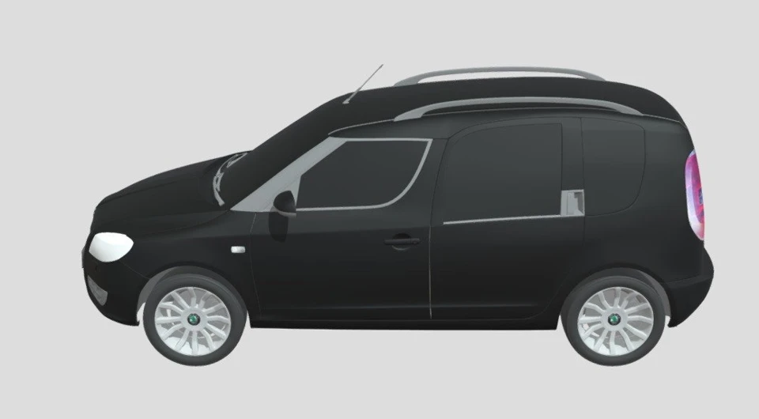
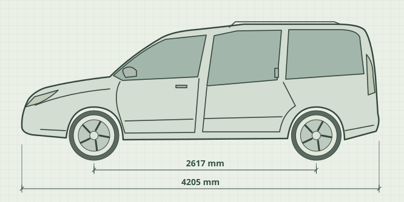
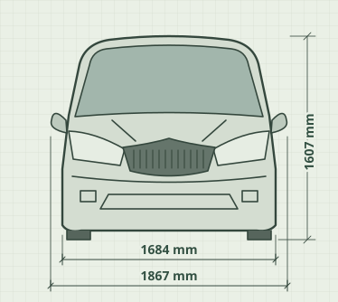

ŠKODA
Roomster.

Szkice wymiarowe
Škoda Roomster · nadwozie standardowe · wymiary w mm




Autorskie szkice poglądowe. Wymiary według instrukcji Škody, „Technická data” ↗.
ŠKODA

Škoda Roomster · nadwozie standardowe · wymiary w mm


Autorskie szkice poglądowe. Wymiary według instrukcji Škody, „Technická data” ↗.